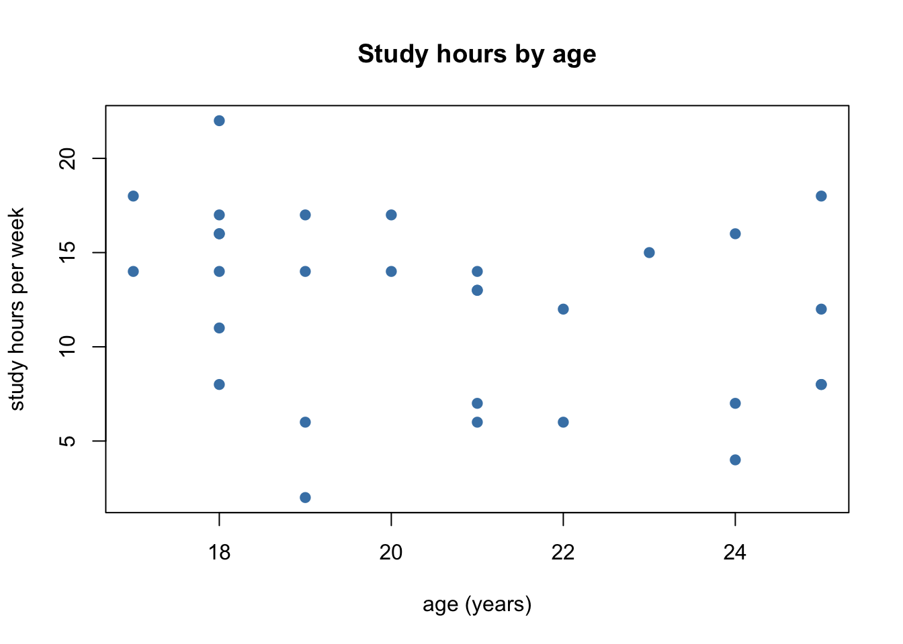
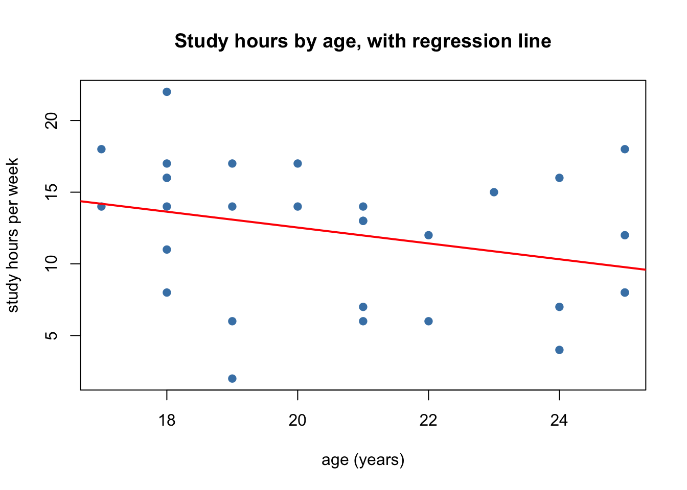
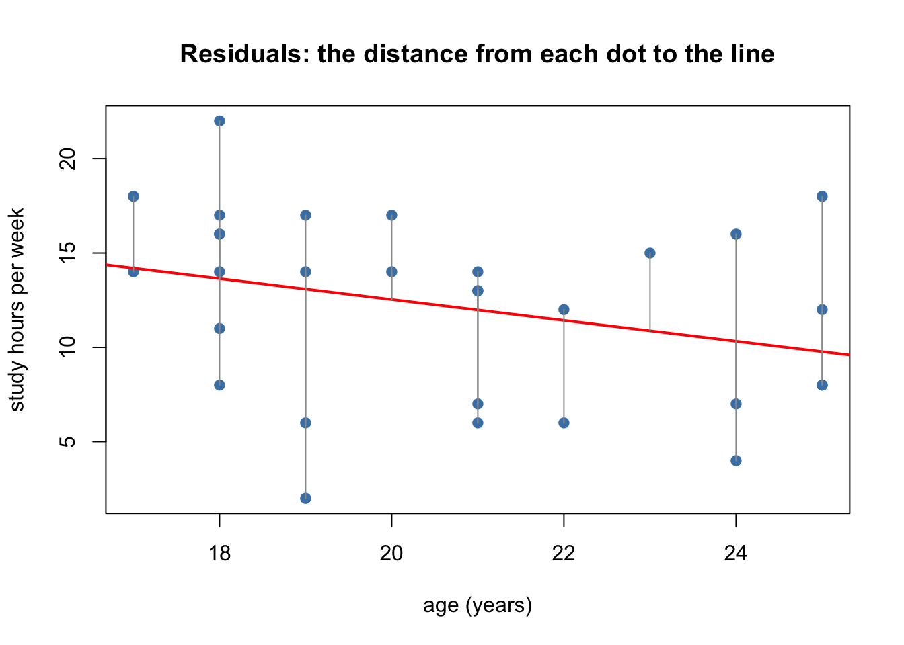
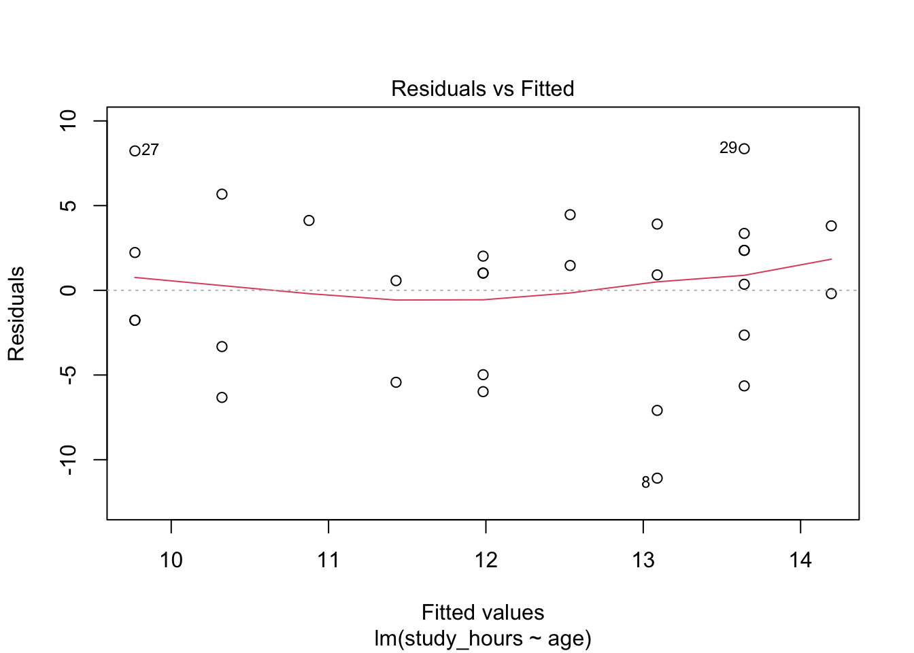
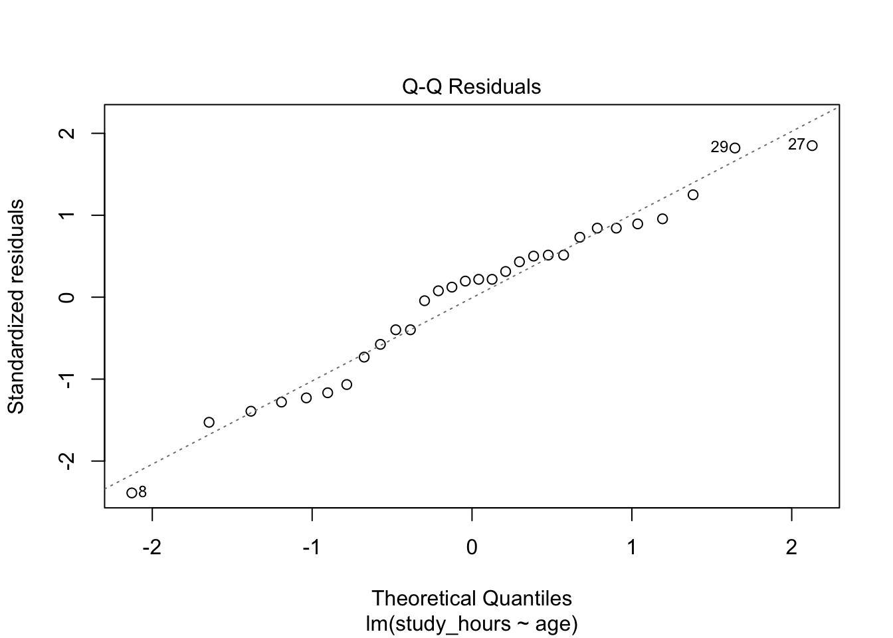
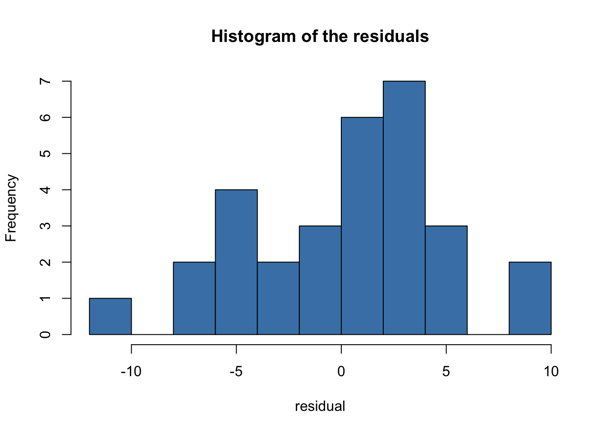
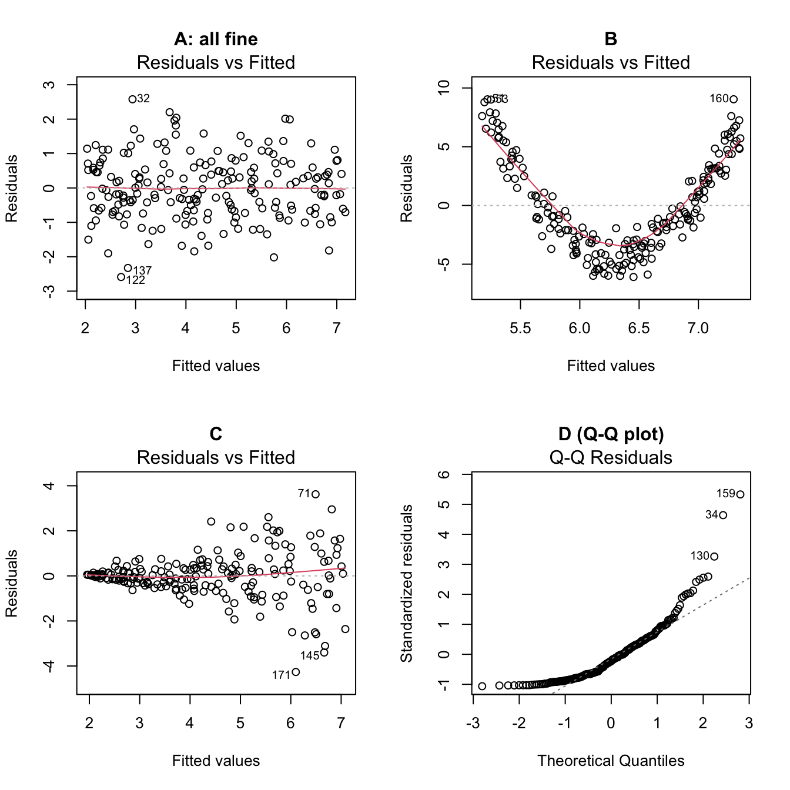
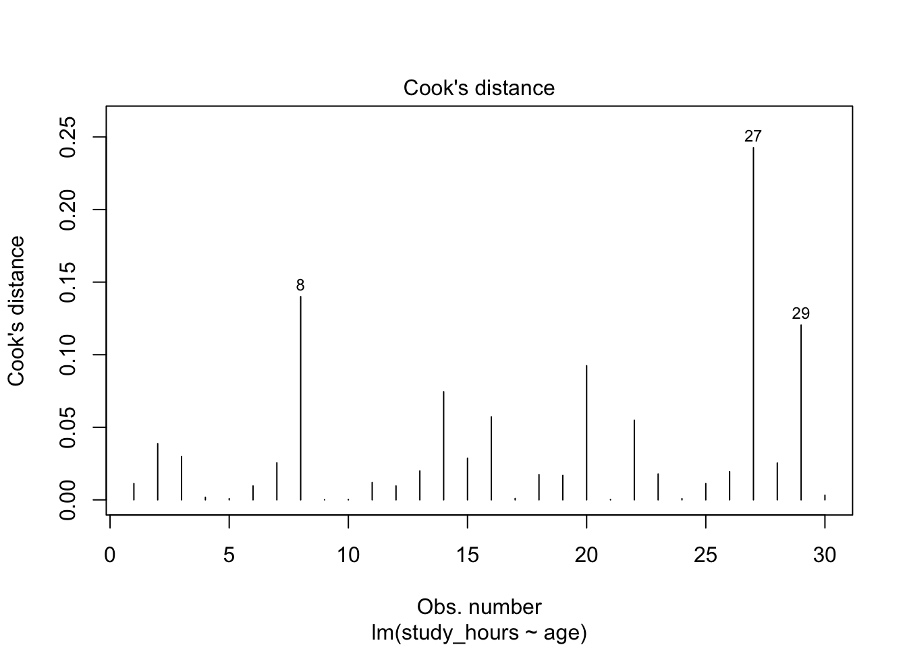

survey <- read.csv("class_survey_clean.csv")r_tutorial_week_05
Werkcollege 5
How to use this tutorial
Welcome back! In Week 4 you learned to test a claim with a t-test. You compared one mean to a known value, and you compared the means of two groups.
This week we look at relations between two variables. For example: do older students study fewer hours? The tool we use is simple regression. You will see that regression is not a completely new tool: the two-group t-test from Week 4 is actually a special case of it.
We work in two parts:
- A number by two groups: we compare a t-test with a regression that uses a dummy variable.
- A number by a number: we draw a scatterplot, fit a regression line, and check the assumptions.
Work through this page carefully, from top to bottom. Every short explanation is followed by a Your turn task to do yourself.
General tips:
- Read each part slowly and in order. Each step builds on the one before it.
- Type the code yourself instead of copying and pasting it. You learn faster this way.
- Errors are normal. Read the message and try again.
- If you are stuck, ask a teacher or check the FAQ.
- Save your work often.
1 Start workflow
We begin, as always, with the start workflow:
- Open RStudio: click on the RStudio application.
- Set the working directory: click Session > Set Working Directory > Choose Directory, and choose your
research_methodsfolder. - Open a new script: click File > New File > R Script.
- On the first line, write a comment with the title, for example:
# R tutorial - Week 5. - Save the script as
week5.Rin yourresearch_methodsfolder. - Load your cleaned data from Week 2 into an object called
survey:
WarningWatch out
If you see Error: cannot open file ..., R cannot find the file. Check that your working directory is research_methods (run getwd() to print it), and that class_survey_clean.csv really sits in that folder.
Your turn
Complete the start workflow and load survey. Check that survey appears in the Environment pane (top-right).
2 The five steps, once more
In Week 4 you learned that every hypothesis test follows the same five steps. This week we use them again, now for regression. Keep this list next to you: you will use it in every test for the rest of the course.
NoteThe five steps
- Hypotheses – write down the null and the alternative.
- Assumptions – check that the test is allowed for your data.
- Test statistic – compute the t-value.
- p-value – find how surprising that t-value is if the null hypothesis were true.
- Interpretation – decide about the null hypothesis and say what it means in context.
Step 5 deserves a reminder. Statistics does not give you an automatic, “objective” answer. A p-value and an estimate are tools. You still have to interpret them yourself: How big is the effect, in real units? Does it matter for practice? How good is the sample? Two researchers can look at the same output and write slightly different, but both reasonable, conclusions, as long as they explain their reasoning.
3 Part 1 – A number by two groups: t-test and regression
We start with a question you already know from Week 4: do Pedagogy and Psychology students differ in self-efficacy? We answer it twice: once with a t-test, and once with regression. Then we compare the two outputs.
We keep only the two programmes, exactly like last week:
two_programs <- survey[survey$program_name %in% c("Pedagogy", "Psychology"), ]3.1 Look first: a boxplot and the group means
Before any test, always look at the data:
boxplot(self_efficacy ~ program_name,
data = two_programs,
main = "Self-efficacy by programme",
ylab = "self-efficacy score")
Now the group means and the raw difference between them. “Raw” means: in the original units of the scale (here, scale points), not converted into some other unit.
mean_ped <- mean(two_programs$self_efficacy[two_programs$program_name == "Pedagogy"])
mean_psy <- mean(two_programs$self_efficacy[two_programs$program_name == "Psychology"])
mean_ped
#> [1] 33.9
mean_psy
#> [1] 33.55556
mean_psy - mean_ped # the raw difference: Psychology minus Pedagogy
#> [1] -0.3444444The raw difference is the easiest effect size to understand: “Psychology students score, on average, this many points higher (or lower) than Pedagogy students.”
Your turn
Make the boxplot and compute the two group means and the raw difference for your own two groups. Write down the raw difference. Is it large or small compared to the range of the scale?
3.2 The t-test (from Week 4)
We run the two-sample t-test. This time we add var.equal = TRUE. This tells R to assume that both groups have the same spread in the population. We do this here only because regression makes the same assumption, so the two outputs will match exactly. (In Week 4 we used Welch’s test, which does not need this assumption.)
t.test(self_efficacy ~ program_name, data = two_programs, var.equal = TRUE)
#>
#> Two Sample t-test
#>
#> data: self_efficacy by program_name
#> t = 0.13488, df = 17, p-value = 0.8943
#> alternative hypothesis: true difference in means between group Pedagogy and group Psychology is not equal to 0
#> 95 percent confidence interval:
#> -5.043285 5.732174
#> sample estimates:
#> mean in group Pedagogy mean in group Psychology
#> 33.90000 33.55556Write down three numbers from this output: the t-value, the p-value, and the two group means.
3.3 Making a dummy variable
Regression works with numbers. So we turn the group into a number with a dummy variable. A dummy variable has only two values:
0for the reference group (here: Pedagogy),1for the other group (here: Psychology).
We make it with ifelse() from Week 2:
two_programs$psychology <- ifelse(two_programs$program_name == "Psychology", 1, 0)
table(two_programs$program_name, two_programs$psychology) # check: every Pedagogy row is 0, every Psychology row is 1
#>
#> 0 1
#> Pedagogy 10 0
#> Psychology 0 9
NoteExample: reading a dummy
A dummy is named after the group that gets the 1. So psychology = 1 means “this person studies Psychology”, and psychology = 0 means “this person does not study Psychology” (here: studies Pedagogy).
TipGoing further (optional): R can make the dummy for you
If you put a text variable straight into a regression, R makes the dummy itself. It picks the reference group alphabetically (here: Pedagogy). So lm(self_efficacy ~ program_name, data = two_programs) gives the same result. Making the dummy by hand helps you see what happens.
3.4 The regression with the dummy
We fit a regression model with the function lm(), which stands for linear model. The formula form y ~ x is the same as in boxplot() and t.test(): the dependent variable (y) comes before the ~, the independent variable (x) after it.
model_dummy <- lm(self_efficacy ~ psychology, data = two_programs)
summary(model_dummy)
#>
#> Call:
#> lm(formula = self_efficacy ~ psychology, data = two_programs)
#>
#> Residuals:
#> Min 1Q Median 3Q Max
#> -9.900 -3.900 0.100 4.272 8.100
#>
#> Coefficients:
#> Estimate Std. Error t value Pr(>|t|)
#> (Intercept) 33.9000 1.7575 19.288 5.41e-13 ***
#> psychology -0.3444 2.5536 -0.135 0.894
#> ---
#> Signif. codes: 0 '***' 0.001 '**' 0.01 '*' 0.05 '.' 0.1 ' ' 1
#>
#> Residual standard error: 5.558 on 17 degrees of freedom
#> Multiple R-squared: 0.001069, Adjusted R-squared: -0.05769
#> F-statistic: 0.01819 on 1 and 17 DF, p-value: 0.8943Look at the table under Coefficients:. It has two rows:
(Intercept): the predicted score when the dummy is0. That is the mean of Pedagogy.psychology: how much the prediction changes when the dummy goes from0to1. That is the raw difference between the two means (Psychology minus Pedagogy).
Check this yourself:
coef(model_dummy) # intercept and slope
#> (Intercept) psychology
#> 33.9000000 -0.3444444
c(mean_ped, mean_psy - mean_ped) # Pedagogy mean, and the raw difference
#> [1] 33.9000000 -0.3444444The numbers are the same.
3.5 Comparing the two outputs
Now compare the t-test and the regression side by side:
| What | t-test output | regression output |
|---|---|---|
| Mean of Pedagogy | mean in group Pedagogy |
(Intercept) estimate |
| Raw difference | difference of the two means | psychology estimate |
| t-value | t |
t value in the psychology row |
| p-value | p-value |
Pr(>\|t\|) in the psychology row |
The t-value has the same size in both outputs. The sign can be different, because t.test() subtracts in the order Pedagogy minus Psychology, and our dummy measures Psychology minus Pedagogy. The p-value is exactly the same.
So a two-group t-test (with equal spreads) and a regression with a dummy are the same test. Regression is the more general tool: next you will see that it also works when x is a number instead of a group.
Your turn
For your own two groups:
- Run
t.test()withvar.equal = TRUE. - Make a dummy variable with
ifelse()and check it withtable(). - Run
lm()with the dummy and look atsummary(). - Copy the table above into your script as comments, and fill in your own numbers in both columns.
- Write a conclusion of two or three sentences. Use the raw difference (in scale points), the p-value, and say what the difference means for practice.
4 Part 2 – A number by a number: simple regression
Now x is a number. Our example question: do older students study fewer hours per week?
- Dependent variable (y):
study_hours, the variable we want to explain. - Independent variable (x):
age, the variable we use to explain it.
4.1 Look first: a scatterplot
For two numeric variables, the right picture is a scatterplot: one dot per person, with x on the horizontal axis and y on the vertical axis. We use plot() with the same y ~ x formula:
plot(study_hours ~ age,
data = survey,
pch = 19, col = "steelblue",
main = "Study hours by age",
xlab = "age (years)",
ylab = "study hours per week")
When you look at a scatterplot, ask three questions:
- Direction: do the dots go up (positive), down (negative), or neither?
- Form: do they follow a straight line, or a curve?
- Strength and odd points: are the dots close to a line, or widely spread? Are there dots far away from the rest?
Your turn
Choose two numeric variables for your own research question: one dependent variable (y) and one independent variable (x). Make a scatterplot with a title and clear axis labels. Answer the three questions above in one sentence each.
4.2 A short recap: correlation
You met the correlation (\(r\)) in the lecture. It is a number between \(-1\) and \(+1\) that describes how strongly two numeric variables move together in a straight line:
- \(r\) close to \(+1\): a strong positive relation (higher x, higher y).
- \(r\) close to \(-1\): a strong negative relation (higher x, lower y).
- \(r\) close to \(0\): no straight-line relation.
cor(survey$age, survey$study_hours)
#> [1] -0.3014262A correlation can also be tested, with \(H_0: \rho = 0\) (no relation in the population; \(\rho\) is the Greek letter “rho”, the correlation in the population). The function cor.test() does this with a t-test:
cor.test(survey$age, survey$study_hours)
#>
#> Pearson's product-moment correlation
#>
#> data: survey$age and survey$study_hours
#> t = -1.6728, df = 28, p-value = 0.1055
#> alternative hypothesis: true correlation is not equal to 0
#> 95 percent confidence interval:
#> -0.59687775 0.06601149
#> sample estimates:
#> cor
#> -0.3014262Remember the t, df, and p-value here. You will see the same numbers again in a moment.
Your turn
Compute the correlation for your two variables with cor(), and test it with cor.test(). Is the correlation positive or negative? Is it strong or weak?
4.3 From correlation to a regression line
The correlation tells you how strongly two variables are related. Regression tells you how much y changes when x goes up by one unit. It does this by drawing the best straight line through the dots:
\[\hat{y} = a + b \cdot x\]
- \(\hat{y}\) (“y-hat”) is the predicted value of y.
- \(a\) is the intercept: the predicted y when x is 0.
- \(b\) is the slope (or regression coefficient): how much the predicted y changes when x goes up by 1.
We fit the model with lm(), exactly like in Part 1:
model <- lm(study_hours ~ age, data = survey)
coef(model)
#> (Intercept) age
#> 23.6000000 -0.5532258We draw the line on top of the scatterplot with abline():
plot(study_hours ~ age,
data = survey,
pch = 19, col = "steelblue",
main = "Study hours by age, with regression line",
xlab = "age (years)",
ylab = "study hours per week")
abline(model, col = "red", lwd = 2)
Read the slope in words, always in the units of your variables. Here the slope is -0.55: “for every year older, the predicted study time changes by -0.55 hours per week.” Because the slope is negative, older students are predicted to study less. A positive slope would mean they are predicted to study more. This raw slope is the effect size for regression: it tells you how big the relation is, in real units.
WarningWatch out: the intercept is not always meaningful
The intercept is the predicted y when x is 0. Here that means the study hours of a student aged 0, which makes no sense. The intercept is needed to draw the line, but you often do not interpret it. In Part 1 it was meaningful, because x = 0 meant “Pedagogy”.
Your turn
Fit lm() for your own two variables and draw the regression line on your scatterplot. Write the slope in one sentence, in the real units of your variables (for example “for every extra hour of …, the score goes up by … points”).
4.4 Predicted values and residuals
For every person, the model gives a predicted value \(\hat{y}\): the point on the line at that person’s x. The person’s real score is usually not exactly on the line. The distance between the real score and the predicted score is the residual:
\[\text{residual} = y - \hat{y}\]
- A positive residual: the person is above the line (scores higher than predicted).
- A negative residual: the person is below the line (scores lower than predicted).
R gives you both with fitted() and residuals():
head(data.frame(age = survey$age,
observed = survey$study_hours,
predicted = round(fitted(model), 1),
residual = round(residuals(model), 1)))
#> age observed predicted residual
#> 1 25 8 9.8 -1.8
#> 2 17 18 14.2 3.8
#> 3 22 6 11.4 -5.4
#> 4 20 14 12.5 1.5
#> 5 21 13 12.0 1.0
#> 6 18 16 13.6 2.4In a picture, the residuals are the vertical lines between each dot and the regression line:
plot(study_hours ~ age,
data = survey,
pch = 19, col = "steelblue",
main = "Residuals: the distance from each dot to the line",
xlab = "age (years)",
ylab = "study hours per week")
abline(model, col = "red", lwd = 2)
segments(x0 = survey$age, y0 = fitted(model),
x1 = survey$age, y1 = survey$study_hours,
col = "grey60")
The regression line is the line that makes these residuals as small as possible (to be exact: it makes the sum of the squared residuals as small as possible). This is why the method is called least squares.
Your turn
Look at the first row of the table above. Check by hand (in R, as a calculator) that the residual is the observed value minus the predicted value. Then use coef(model) to compute the predicted value yourself: a + b * age.
5 Testing the slope: the five steps
Is the relation in our sample strong enough to say something about the population? We walk the five steps.
5.1 Step 1 – Hypotheses
We test whether the slope in the population (\(\beta\), the Greek letter “beta”) is zero:
- \(H_0: \beta = 0\) – there is no linear relation between age and study hours in the population.
- \(H_1: \beta \neq 0\) – there is a linear relation (positive or negative).
This is a two-sided test, our default, just like in Week 4.
NoteA special case (optional): one-sided tests
If you have a strong reason to expect one direction before you look at the data (for example “older students study less”, \(H_1: \beta < 0\)), you could test one-sided. summary() always reports the two-sided p-value. For a one-sided test you halve it, but only if the slope goes in the direction you predicted. In this course, use two-sided unless you have a very good reason.
Your turn
Write down \(H_0\) and \(H_1\) for your own two variables, in words and with \(\beta\).
5.2 Step 2 – Assumptions
Regression has more assumptions than the t-test. We discuss them in a separate section below, because checking them takes some work. For now, remember the list:
- Linearity: the relation between x and y is a straight line.
- Independent observations: one row per person, and people do not influence each other.
- Normality of the residuals: the residuals are roughly normally distributed.
- Homoscedasticity: the spread of the residuals is about the same for all values of x.
- No measurement error in x: the independent variable is measured (almost) perfectly.
We come back to all five in the section Checking the assumptions.
5.3 Step 3 – The test statistic
The t-value for the slope works like every t-value you have seen: the estimate, divided by its standard error.
\[t = \frac{b - 0}{SE_b}\]
The “\(- 0\)” is there because \(H_0\) says the slope is 0. Both \(b\) and its standard error are in the summary() output:
summary(model)
#>
#> Call:
#> lm(formula = study_hours ~ age, data = survey)
#>
#> Residuals:
#> Min 1Q Median 3Q Max
#> -11.0887 -3.1524 0.9645 3.1081 8.3581
#>
#> Coefficients:
#> Estimate Std. Error t value Pr(>|t|)
#> (Intercept) 23.6000 6.8897 3.425 0.00191 **
#> age -0.5532 0.3307 -1.673 0.10551
#> ---
#> Signif. codes: 0 '***' 0.001 '**' 0.01 '*' 0.05 '.' 0.1 ' ' 1
#>
#> Residual standard error: 4.754 on 28 degrees of freedom
#> Multiple R-squared: 0.09086, Adjusted R-squared: 0.05839
#> F-statistic: 2.798 on 1 and 28 DF, p-value: 0.1055In the Coefficients: table, the age row gives Estimate (\(b\)), Std. Error (\(SE_b\)), t value, and Pr(>|t|) (the p-value). We compute the t-value by hand from the table:
coef_table <- summary(model)$coefficients
coef_table # the coefficients table on its own
#> Estimate Std. Error t value Pr(>|t|)
#> (Intercept) 23.6000000 6.8897452 3.425381 0.001912969
#> age -0.5532258 0.3307184 -1.672800 0.105505297
b <- coef_table["age", "Estimate"]
se_b <- coef_table["age", "Std. Error"]
t_value <- (b - 0) / se_b
t_value
#> [1] -1.6728
NoteWhere does the standard error come from?
The standard error of the slope is the width of the sampling distribution of the slope, just like the standard error of the mean in Week 3. If you drew many samples, each would give a slightly different slope. \(SE_b\) tells you how much the slope wobbles from sample to sample. R computes it for you; you do not need the formula.
Your turn
Run summary() for your own model. Find \(b\) and \(SE_b\) in the table, and compute the t-value by hand. Check that it matches the t value in the output.
5.4 Step 4 – The p-value
The t-value follows a t-distribution with \(n - 2\) degrees of freedom (we lose 2: one for the intercept, one for the slope). We use pt() exactly like in Week 4:
n <- nrow(survey)
df <- n - 2
p_value <- 2 * pt(-abs(t_value), df = df) # two-sided p-value
p_value
#> [1] 0.1055053
TipCorrelation and regression give the same test
Compare the t, df, and p-value with the output of cor.test() above. They are identical. Testing “the correlation is 0” and testing “the slope is 0” is the same test.
Your turn
Compute the two-sided p-value for your slope with pt(). Check that it matches Pr(>|t|) in summary() and the p-value from cor.test(). On paper, you would look it up in Table B with \(df = n - 2\).
5.5 A confidence interval for the slope
As in Week 3, a single estimate is not the whole story. A 95% confidence interval for the slope gives a range of plausible values for \(\beta\) in the population:
confint(model)
#> 2.5 % 97.5 %
#> (Intercept) 9.486997 37.71300
#> age -1.230672 0.12422Read the age row. If the interval contains 0, then “no relation” is still a plausible value, and the two-sided test is not significant at 0.05. If 0 is outside the interval, the test is significant. Testing and confidence intervals are two sides of one coin, just as in Week 4.
Your turn
Compute confint() for your model. Does the interval for the slope contain 0? Does this agree with your p-value?
5.6 How much does the model explain? R-squared
The slope tells you how much y changes per unit of x. Another question is: how well does x predict y? Do the dots lie close to the line, or far away? This is measured by R-squared (\(R^2\)).
\(R^2\) is the share of the differences in y (the variance) that the model explains. It lies between 0 and 1:
- \(R^2 = 0\): x explains nothing of y.
- \(R^2 = 1\): x explains y perfectly (all dots on the line).
summary(model)$r.squared
#> [1] 0.09085777Multiply by 100 to read it as a percentage: “age explains about 9% of the differences in study hours between students.” The other part is explained by other things that are not in the model.
In simple regression, \(R^2\) is simply the correlation squared:
cor(survey$age, survey$study_hours)^2
#> [1] 0.09085777
NoteRaw slope or R-squared?
Both are useful, but they answer different questions. The raw slope says how big the change in y is, in real units: easy to judge for practice. \(R^2\) (like the correlation) is standardized: it has no units, which makes it easier to compare across studies, but harder to judge for practice. In this course we focus on the raw slope and use \(R^2\) as extra information.
Your turn
Compute \(R^2\) for your model, and check that it equals your correlation squared. Write one sentence: “x explains about …% of the differences in y.”
5.7 Step 5 – Interpretation
Now we put everything together. A good conclusion answers these questions:
- The test: is \(p\) smaller than 0.05? Do we reject \(H_0\) or not?
- The size: what is the raw slope, in real units? What is the confidence interval?
- The meaning: is this relation large enough to matter in practice? What does it mean for the people you study?
- The limits: how good is the sample? Are the assumptions met? Are there influential observations (see below)?
NoteExample: a conclusion
“In our sample of 30 students, older students studied somewhat fewer hours: for every year older, about 0.6 hour less per week (95% CI from -1.2 to 0.1). This relation was not statistically significant (\(t\)(28) = -1.67, \(p\) = 0.106), so we do not reject \(H_0\). The interval is wide and includes both no relation and a relation of more than one hour per year. With only 30 students we cannot say much about the population. A larger sample is needed before we draw any conclusion for practice.”
Notice what this example does not say: it does not say “there is no relation”. Not rejecting \(H_0\) is not the same as proving \(H_0\). And a significant result would not automatically mean an important result: with a very large sample, even a slope of a few minutes per year could become significant. You always have to judge the size of the effect in the context of your research question.
Your turn
Write a conclusion of four to six sentences for your own model. Answer the four questions above. Use the raw slope (in real units), the confidence interval, the t-value, and the p-value.
6 Checking the assumptions
A regression always gives you numbers, even when the model is wrong for your data. So we must check the assumptions before we trust the t-value and the p-value. Most checks are done with pictures of the residuals.
6.1 Two assumptions you check by thinking
Some assumptions cannot be seen in a plot. You check them by thinking about how the data were collected.
- Independent observations. Each person should appear only once, and people should not influence each other’s answers. This is violated, for example, when you measure the same person twice, or when classmates fill in the questionnaire together.
- No measurement error in x. Regression assumes that the independent variable is measured (almost) perfectly.
ageis measured very precisely. A questionnaire score, such as self-efficacy, always contains some measurement error. Measurement error in x makes the slope look smaller than it really is.
Your turn
For your own model, write one or two sentences on each of these two assumptions. How were your data collected? How precisely is your x measured?
6.2 Three assumptions you check with plots
R makes the diagnostic plots for you with plot(model). We look at two of them.
Plot 1 – Residuals vs Fitted: linearity and homoscedasticity. This plot shows the predicted values on the x-axis and the residuals on the y-axis:
plot(model, which = 1)
What you want to see:
- Linearity: the dots are spread around the horizontal line at 0 without a pattern. The red line should be roughly flat. A clear curve (a U-shape or a hill) means the relation is not a straight line.
- Homoscedasticity: the vertical spread of the dots is about the same from left to right. A funnel shape (narrow on one side, wide on the other) means the spread is not equal: this is called heteroscedasticity.
Plot 2 – Q-Q plot: normality of the residuals. This plot compares the residuals with a perfect normal distribution:
plot(model, which = 2)
What you want to see: the dots lie roughly on the dashed line. Small wiggles at the ends are normal. Dots that curve far away from the line, especially at both ends, point to non-normal residuals.
You can also simply make a histogram of the residuals, as in Week 4:
hist(residuals(model),
breaks = 10,
col = "steelblue",
main = "Histogram of the residuals",
xlab = "residual")
WarningWatch out: normality of the residuals, not of x or y
The normality assumption is about the residuals, not about x or y themselves. A skewed x variable is not a problem in itself. Always check the residuals.
NoteSmall samples are hard to judge
With only 30 people, the plots always look a bit messy. Do not look for perfection. Look for clear patterns: a strong curve, a clear funnel, or dots far away from the rest. When in doubt, describe what you see and be careful in your conclusion.
Your turn
Make the two diagnostic plots and the histogram of the residuals for your own model. For each of the three assumptions (linearity, homoscedasticity, normality of the residuals), write one sentence: what do you see, and is the assumption reasonable?
6.3 What do violations look like?
With real data of 30 people, it is hard to learn what a “bad” plot looks like. So we simulate four datasets, as in Week 3: one where all assumptions hold, and three where one assumption is broken. This is code to run and read; you do not need to write it yourself.
set.seed(2026)
n_sim <- 200
x <- runif(n_sim, 0, 10) # x values between 0 and 10
y_good <- 2 + 0.5 * x + rnorm(n_sim, sd = 1) # all assumptions hold
y_curve <- 2 + 0.5 * (x - 5)^2 + rnorm(n_sim, sd = 1) # the relation is a curve
y_funnel <- 2 + 0.5 * x + rnorm(n_sim, sd = 0.2 * x) # the spread grows with x
y_skew <- 2 + 0.5 * x + (rexp(n_sim, rate = 1) - 1) # skewed residuals
par(mfrow = c(2, 2)) # four plots in one window
plot(lm(y_good ~ x), which = 1, main = "A: all fine")
plot(lm(y_curve ~ x), which = 1, main = "B")
plot(lm(y_funnel ~ x), which = 1, main = "C")
plot(lm(y_skew ~ x), which = 2, main = "D (Q-Q plot)")
par(mfrow = c(1, 1)) # back to one plot per windowYour turn
Plot A shows what “all fine” looks like. For plots B, C, and D, decide which assumption is violated: linearity, homoscedasticity, or normality of the residuals. Explain in one sentence per plot what you see that tells you this.
Hint: compare each plot with plot A. Where is the pattern, a curve, a funnel, or dots leaving the line?
7 Influential observations
Sometimes one person has a large effect on the regression line. If you removed that one person, the line (and maybe your conclusion) would change a lot. Such a person is called an influential observation.
A person is usually influential when they have an unusual x value (far from the other x values) and do not follow the pattern of the others. We measure influence with Cook’s distance: one number per person. The larger, the more influence.
plot(model, which = 4) # Cook's distance for each person
A common rule of thumb: look more closely at people with a Cook’s distance larger than \(4 / n\).
cooks <- cooks.distance(model)
cut_off <- 4 / nrow(survey)
cut_off
#> [1] 0.1333333
which(cooks > cut_off) # the row numbers above the rule of thumb
#> 8 27
#> 8 27
survey[cooks > cut_off, c("age", "study_hours")] # their values
#> age study_hours
#> 8 19 2
#> 27 25 187.1 Re-running the analysis without them
To see how much these people matter, we run the model again without them and compare. We do not delete them from survey; we make a new object:
survey_check <- survey[cooks <= cut_off, ] # everyone at or below the rule of thumb
model_check <- lm(study_hours ~ age, data = survey_check)
# compare the two slopes and p-values
rbind(all_people = summary(model)$coefficients["age", ],
without_influ = summary(model_check)$coefficients["age", ])
#> Estimate Std. Error t value Pr(>|t|)
#> all_people -0.5532258 0.3307184 -1.672800 0.105505297
#> without_influ -0.8446677 0.2977908 -2.836447 0.008720827Compare the two rows. Did the slope change much? Did the p-value cross 0.05? Did the conclusion change?
In our example, two students change the result: without them, the slope is steeper and the p-value drops below 0.05. So two people decide whether the result is “significant” or not. This is exactly the situation where you must be careful, as the box below explains.
ImportantNever remove people just to get a better result
An influential observation is not automatically a mistake. Only remove a person when there is a clear reason, for example a typing error (an age of 190) or someone who does not belong to your population. If there is no such reason, keep everyone in the main analysis and report both results: “Without these two students the slope was …, so our conclusion depends (or does not depend) on these two people.” Removing people until \(p < 0.05\) is a serious research error.
Your turn
For your own model:
- Make the Cook’s distance plot and find the people above \(4 / n\).
- Look at their values. Is there a clear reason to remove them (for example, an impossible value)?
- Re-run the model without them and compare the slope and the p-value.
- Write two sentences: does your conclusion change, and what would you report?
8 Recap: what you can now do
Last week you tested means. This week you learned to describe and test relations between two variables. You can now:
- apply the five steps of a hypothesis test to regression;
- make a dummy variable with
ifelse()and show that a regression with a dummy gives the same test as a t-test; - read the intercept and slope of a dummy regression as a group mean and a raw mean difference;
- make a scatterplot and compute and test a correlation with
cor()andcor.test(); - fit a simple regression with
lm(), draw the line withabline(), and interpret the slope in real units; - explain predicted values and residuals;
- compute the t-value of the slope by hand, find the p-value, and compute a confidence interval with
confint(); - compute and interpret R-squared;
- name the five assumptions of regression and check them with
plot(model); - find influential observations with Cook’s distance, and re-run the analysis to see whether your conclusion depends on them;
- write a conclusion that combines the test, the size of the effect, and the context.
A small cheat sheet to keep:
| You want to… | You write… |
|---|---|
| Make a dummy variable | df$d <- ifelse(df$group == "B", 1, 0) |
| t-test with equal spreads | t.test(y ~ group, data = df, var.equal = TRUE) |
| Scatterplot | plot(y ~ x, data = df) |
| Correlation | cor(df$x, df$y) |
| Test a correlation | cor.test(df$x, df$y) |
| Fit a regression | model <- lm(y ~ x, data = df) |
| Full output | summary(model) |
| Intercept and slope | coef(model) |
| Draw the line | abline(model) |
| Predicted values / residuals | fitted(model), residuals(model) |
| t-value of the slope by hand | b / se_b |
| Two-sided p-value | 2 * pt(-abs(t), df = n - 2) |
| Confidence interval for the slope | confint(model) |
| R-squared | summary(model)$r.squared |
| Linearity and homoscedasticity | plot(model, which = 1) |
| Normality of the residuals | plot(model, which = 2) |
| Cook’s distance | plot(model, which = 4), cooks.distance(model) |
Well done. Keep your materials in the research_methods folder, we build directly on them next week.